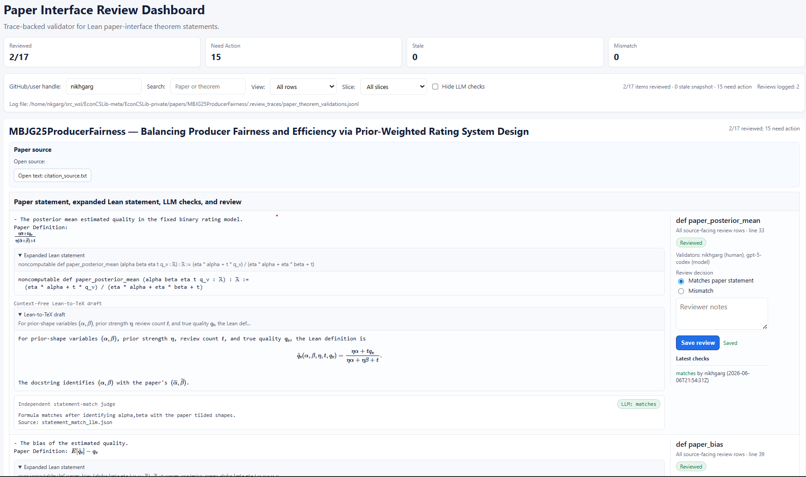
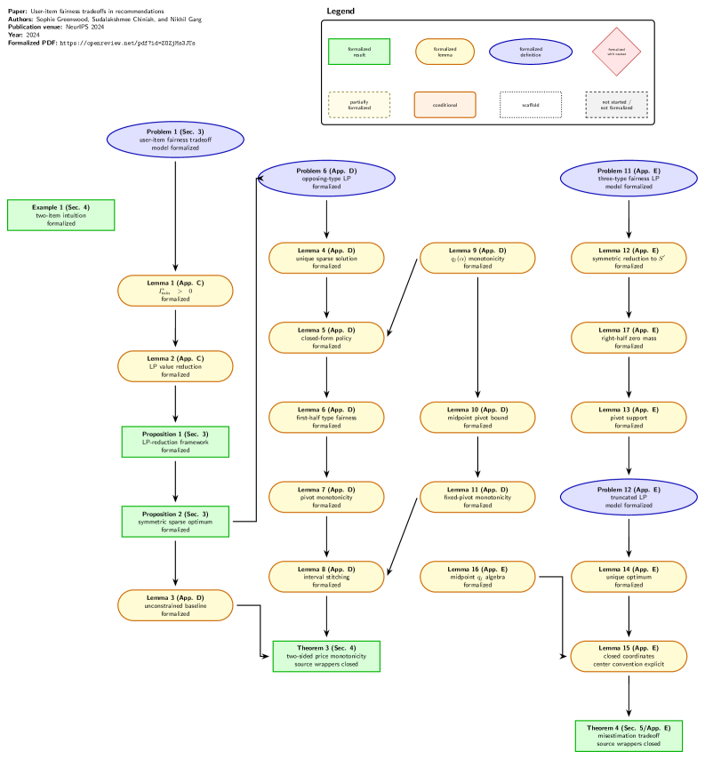

Presents EconCSLib, a Lean 4 library and human-AI workflow for formalizing economics and computation research papers.
Abstract
This paper presents EconCSLib, a Lean 4 library and workflow for formalizing research papers in Economics and Computation with language-model assistance. The central design principle is a human-AI-Lean workflow: an LLM writes Lean code, Lean checks formal statements and proofs, and humans (assisted by an LLM) verify the translation boundary from paper claims to formal statements. EconCSLib is organized around research papers, preserving their formal statements and following their proof structure to the extent possible; reusable mathematical statements are elevated into shared EconCS infrastructure. The workflow is designed to be author-facing: researchers can formalize their own papers, inspect the Lean code's translations of paper-facing statements, and contribute reusable components back to the library; this is supported by post-formalization validation reports, paper result dependency graphs, and a review dashboard. The current public repository contains 11 formalized papers and 3 partially formalized papers, along with initial libraries for probability, auctions, matching markets, and graph tools. The library and workflow are available at https://github.com/nikhgarg/EconCSLib, with corresponding project webpage at https://gargnikhil.com/EconCSLib/. To our knowledge, we are also among the first applied math researchers to systematically pursue Lean formalization of one's own publications in the process of building such a community library. We welcome users and contributors to the project.
Problem
Research papers in economics and computation lack machine-checked formal statements and proofs, and formalizing them requires substantial Lean expertise that domain researchers rarely have.
Approach
EconCSLib is a Lean 4 library organized around individual research papers, preserving their formal statements and proof structure. A human-AI-Lean workflow has an LLM write Lean code, Lean check it, and humans verify the translation from paper claims to formal statements. Reusable results are elevated into shared infrastructure for probability, auctions, matching markets, and graph tools. Post-formalization validation reports, dependency graphs, and a review dashboard support author-facing use.

Figure 2: Screenshot of the paper-interface review dashboard for [ 48 ] . For each paper mathematical statement, the dashboard shows the paper’s L a T e X statement and Lean statement, so that a human can verify that these match. The dashboard further shows an AI-generated Lean-to-TeX draft (generated without any context for the original paper)—ideally, this should match the original paper, and ma
Results
The public repository contains 11 fully formalized papers and 3 partially formalized ones, plus the shared EconCS libraries.

Figure 1: Full paper statement dependency DAG for [ 18 ] . The DAG is auto-generated at the beginning of a paper’s formalization process, and it is kept up-to-date so that a human can quickly understand formalization status. This DAG shows that the paper has been completely formalized.